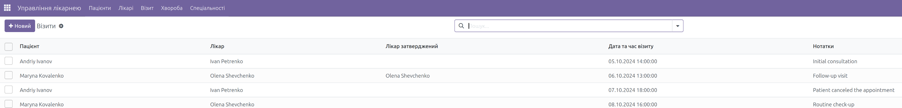
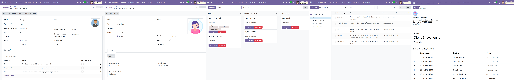

Comprehensive system to manage hospital records for doctors and patients

Key Features
Patient Management: Track patient records, including medical history, diagnoses, and treatments.
Doctor Management: Manage doctor profiles, schedules, and patient assignments.
Appointment Scheduling: Efficient system for scheduling and managing patient appointments.
Medical Records: Store and access detailed medical information securely.
Reporting: Generate performance reports for patient visits and doctor consultations.
Integration: Integrates seamlessly with other Odoo modules like billing, inventory, and HR.

Why Choose Our Hospital Management Module?
Our module simplifies the management of hospital records, making it easier to streamline healthcare operations.
From handling patient data to managing doctor schedules, our system provides an all-in-one solution.